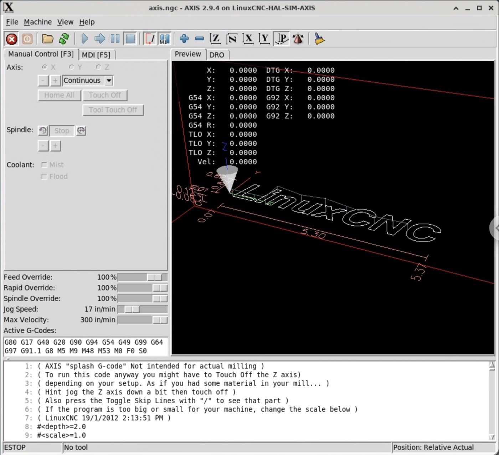

The operator panel sits at the left edge of the screen, next to LinuxCNC's own AXIS window, which stays untouched. Narrow, it shows only what the operator needs: pedal, start buttons and the job list. Press Expand to open the job editor and the pallet parameters. Everything is clickable. Program names and counts are examples. The AXIS window is a static screenshot and does not react to the panel.

| # | Program | Plate | Times | Order |
|---|
Plate position sets which alignment pins rise and which start button blinks. A long plate sits against the left section and uses the left start.